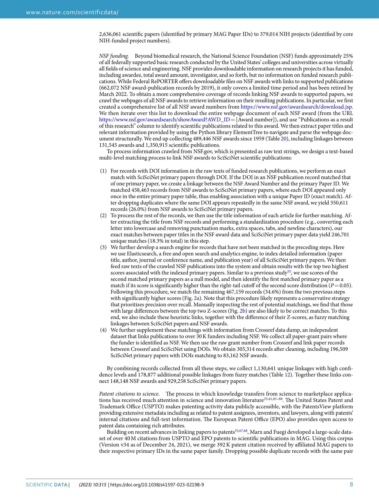
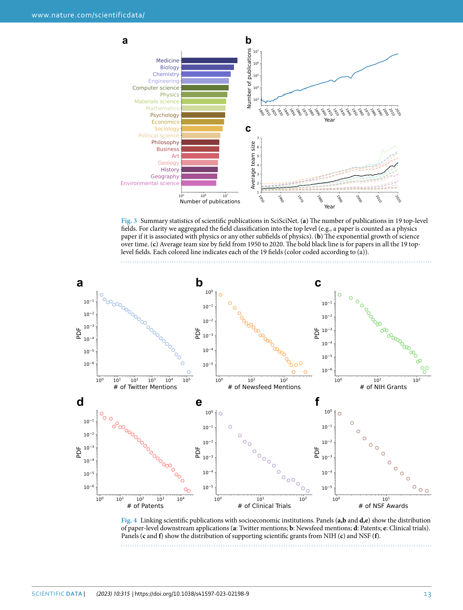
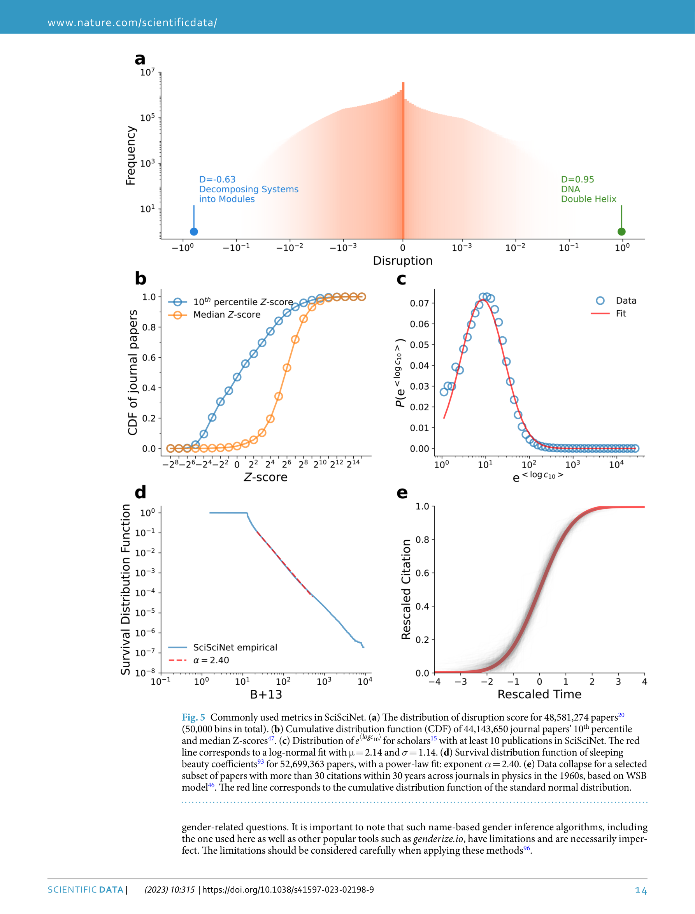

Figure 1
저자: Zihang Lin, Yian Yin, Lu Liu, Dashun Wang | 날짜: 2023-06-01 | Journal: Scientific Data | DOI: 10.1038/s41597-023-02198-9
Figure 1
과학학(science of science) 연구를 위한 통합 데이터 인프라를 어떻게 구축할 수 있는가? SciSciNet은 1억 3,400만 편 이상의 과학 출판물과 펀딩(NIH, NSF), 특허 인용, 임상시험, 미디어/소셜미디어 언급 등 수백만 개의 외부 연결을 포괄하는 대규모 오픈 데이터 레이크다. 전처리 단계와 분석 선택을 상세히 문서화하고, 자주 사용되는 지표(disruption index, novelty, interdisciplinarity 등)를 사전 계산하여 제공함으로써, 진입 장벽 낮추기, 중복 노력 감소, 재현성 향상, 아이디어 다양성 확대에 기여한다.

Figure 2
과학학 커뮤니티는 급격히 성장하면서 세 가지 핵심 도전에 직면했다: (1) 산재한 데이터셋과 그 연결을 추적하기 어려움, (2) 복잡한 전처리에서 연구자마다 다른 분석 선택이 재현성을 저해, (3) 정교한 지표 계산에 상당한 시간·자원 투자가 필요. 공통 데이터 자원이 없어 이러한 문제가 중복적으로 발생하고 있었다.

Figure 3

Figure 4

Figure 5
총평: 과학학 연구의 데이터 인프라를 혁신적으로 통합한 커뮤니티 자원으로, 분야의 재현성과 접근성을 근본적으로 개선할 잠재력을 가진다.